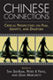

|
Between
the Lines
South Asians and Postcoloniality
edited by Bahri, Deepika and Mary Vasudeva
384 pp • 6x9 • Fall 1996
paper 978-1-56639-468-0
cloth 978-1-56639-467-3
Excerpt available |

|
Global Production
The Apparel Industry in the Pacific Rim
edited by Bonacich, Edna, Lucie Cheng, Norma Chinchilla, Nora Hamilton and Paul Ong
400 pp • 6x9 • Spring 1994
paper 978-1-56639-169-6
cloth 978-1-56639-168-9
Excerpt available |

|
The
Cry and the Dedication
Bulosan, Carlos, edited by E. San Juan, Jr.
344 pp • 6x9 • Spring 1995
paper 978-1-56639-296-9
cloth 978-1-56639-295-2
Excerpt available |
|
Mobilizing Gay Singapore
Rights and Resistance in an Authoritarian State
Chua, Lynette J.
228 pp • 6x9 • Spring 2014
paper 978-1-4399-1032-0
cloth 978-1-43991-031-3 |

|
The Transnational Politics of Asian Americans
edited by Collet, Christian, Pei-te Lien
Foreword by Don Nakanishi
252 pp • 6x9 • Spring 2009
paper 978-1-59213-861-6
cloth 978-1-59213-860-9
Excerpt available |
 |
Violent Belongings
Partition, Gender, and National Culture in Postcolonial India
Daiya, Kavita 274 pp • 6x9 • Spring 2008
paper 978-1-59213-743-5
cloth 978-1-59213-743-5
Excerpt available |
 |
BITS of Belonging
Information Technology, Water, and Neoliberal Governance in India
Dasgupta, Simanti
232 pp • 6x9 • Fall 2015
paper 978-1-43991-259-1
cloth 978-1-43991-258-4 |

|
Dream Machine
Realism and Fantasy in Hindi Cinema
Dayal, Samir 320 pp • 6x9 •
Fall 2015
paper 978-1-4399-1064-1
cloth 978-1-4399-1063-4 |

|
Classical Hindu Mythology
A Reader in the Sanskrit Puranas
edited by Dimmit, Cornelia, translated by J. A. B van Buitenen
388 pp • 6x9 • Spring 1978
paper 978-0-87722-122-7
cloth 978-0-87722-117-3
Excerpt available |

|
Mulan's Legend and Legacy in China and the United States
Dong, Lan
280 pp • 6x9 • Fall 2010
paper 978-1-59213-971-2
cloth 978-1-59213-970-5
Excerpt available |
 |
Treacherous Subjects
Gender, Culture, and Trans-Vietnamese Feminism
Duong, Lan P.264 pp • 6x9 • Spring 2012
paper 978-1-4399-0178-6
cloth 978-1-4399-0177-9
Excerpt available |

|
Japanese Cities in the World Economy
edited by Fujita, Kuniko and Richard Child Hill
360 pp • 6x9 • Spring 1993
cloth 978-1-56639-034-7
Excerpt available |
 |
Going Global
Culture, Gender, and Authority in the Japanese Subsidiary of an American Corporation
Fuller, Ellen V.
232 pp • 5.25x8.25 • Fall 2008
paper 978-1-59213-689-6
cloth 978-1-59213-688-9
Excerpt available |

|
Women of Japan and Korea
Continuity and Change
edited by Gelb, Joyce and Marian Lief Palley
320 pp • 6x9 • Fall 1994
paper 978-1-56639-224-2
cloth 978-1-56639-223-5
Excerpt available |
 |
America's First Adventure in China
Trade, Treaties, Opium, and Salvation
Haddad, John R.
294 pp • 6x9 • Spring 2013
paper 978-1-4399-0690-3
cloth 978-1-4399-0689-7
|

|
Patriotic Professionalism in Urban China
Fostering Talent
Hoffman, Lisa M.
216 pp • 6x9 • Spring 2010
paper 978-1-4399-0035-2
cloth 978-1-4399-0034-5
Excerpt Available |

|
The End of Empires
African Americans and India
Horne, Gerald
274 pp • 6x9• Fall 2008
paper 978-1-59213-900-2
cloth 978-1-59213-899-9
Excerpt available |

|
Living Rooms as Factories
Class, Gender, and the Satellite Factory System in Taiwan
Hsiung, Ping-Chun
200 pp • 6x9 • Fall 1995
paper 978-1-56639-390-4
cloth 978-1-56639-389-8
Excerpt available |

|
Across
the Pacific
Asian Americans and Globalization
edited by Hu-DeHart, Evelyn
232 pp • 6x9 • Spring 1999
paper 978-1-56639-824-4
cloth 978-1-56639-710-0
Excerpt available |
|
Tiananmen Fictions Outside the Square
The Chinese Literary Diaspora and the Politics of Global Culture
Kong, Belinda292
pp • 6x9 • Spring 2012
paper 978-1-4399-0759-7
cloth 978-1-4399-0758-0
Excerpt available |

|
Multiple Modernities
Cinemas and Popular Media in Transcultural East Asia
edited by Lau, Jenny Kwok Wah
264 pp • 7x10 • Fall 2002
paper 978-1-56639-986-9
cloth 978-1-56639-985-2
Excerpt available |

|
Culinary Fictions
Food in South Asian Diasporic Culture
Mannur, Anita
272 pp • 6x9 • Fall 2009
paper 978-1-4399-0078-9
cloth 978-1-4399-0077-2
Excerpt available |

|
The Chinese Diaspora on American Screens
Race, Sex, and Cinema
Marchetti, Gina
258 pp • 6x9 • Spring 2012
cloth 978-1-59213-518-9
Excerpt available |

|
From
Tian'anmen to Times Square
Transnational China and the Chinese Diaspora on Global Screens,
1989-1997
Marchetti, Gina
320 pp • 6x9 • Fall 2005
paper 978-1-59213-278-2
cloth 978-1-59213-277-5 |

|
Policy and Politics in Japan
Creative Conservativism
Pempel, T. J.
352 pp • Spring 1980
paper 978-0-87722-250-7
cloth 978-0-87722-249-1
|

|
Picturing Model Citizens
Civility in Asian American Visual Culture
Phu, Thy
218 pp • 6.125x9.25 • Spring 2012
paper 978-1-4399-0721-4
cloth 978-1-4399-0720-7
Excerpt available |
 |
Pinoy Capital
The Filipino Nation in Daly City
Vergara, Jr., Benito M.
232 pp • 6x9 • Fall 2008
paper 978-1-59213-665-0
cloth 978-1-59213-664-3
Excerpt available |

|
Discrepant
Histories
Translocal Essays on Filipino Cultures
edited by Rafael, Vicente L.
360 pp • 6x9 • Spring 1995
paper 978-1-56639-356-0
cloth 978-1-56639-355-3 |

|
Japanese Women and the Transnational Feminist Movement before World War II
Shibahara, Taeko
222 pp • 6x9 • Spring 2014
cloth 978-1-4399-1038-2 |

|
Chinese Connections
Critical Perspectives on Film, Identity, and Diaspora
edited by Tan, See-Kam, Peter X. Feng and Gina Marchetti 320 pp • 6x9 • Fall 2008
paper 978-1-59213-268-3
cloth 978-1-59213-267-6
Excerpt available |

|
Transnationalizing Viet Nam
Community, Culture, and Politics in the Diaspora
Valverde, Kieu-Linh Caroline
198 pp • 6x9 • Fall
2012
paper 978-1-4399-0680-4
cloth 978-1-4399-0679-8
Excerpt available |

|
Musicians from a Different Shore
Asians and Asian Americans in Classical Music
Yoshihara, Mari
288 pp • 6x9 • Fall 2007
paper 978-1-59123-333-8
cloth 978-1-59123-332-1
Excerpt available |

|
The Coolie Speaks
Chinese Indentured Laborers and African Slaves in Cuba
Yun, Lisa
336 pp • 6x9 • Fall 2007
paper 978-1-59213-582-0
cloth 978-1-59213-581-3
Excerpt available |

|
Pluralism, Corporatism, and Confucianism
Political Association and Conflict Regulation in the United States, Europe, and Taiwan
Zeigler, Harmon
272 pp • Spring 1988
cloth 978-0-87722-529-4
|